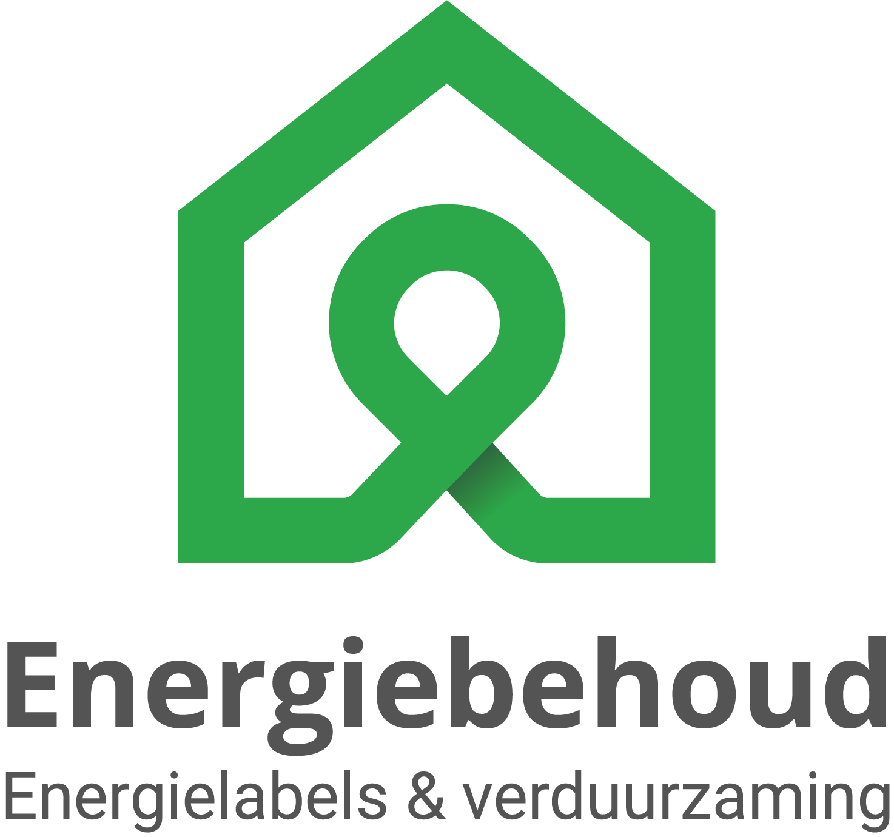

Laden…

🔒 Deze app is exclusief voor Energiebehoud BV
Projectfoto's
Log in met je Energiebehoud-account om foto's direct in de juiste projectmap op te slaan.
Nieuwe map hier aanmaken
Foto's voor:
Tik telkens om een foto te maken — ze worden direct opgeslagen. Je blijft in de zoeker.